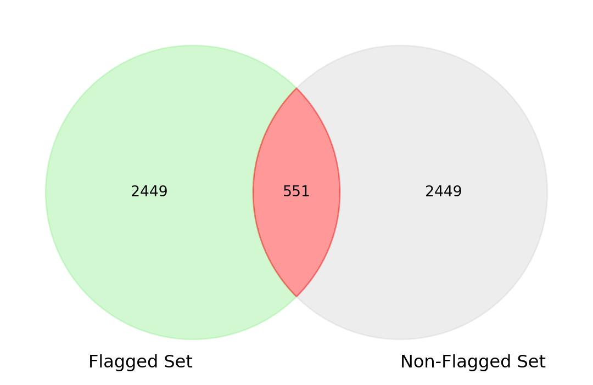

import pandas as pd
import numpy as np
import string
import nltk
from nltk.corpus import stopwords
#nltk.download('stopwords')
pre_2021 = pd.read_csv('media1/tweets_01-08-2021.csv')
#print(pre_2021.text)
#two dataframes
index = pre_2021['isFlagged'] == 't'
flagged_pre_2021 = pre_2021[index]
n_flagged_pre_2021 = pre_2021[~index]TF-IDF on Trump Tweets
I made a model to predictively flag Trump’s post-2021 tweets based off the flagged or non-flagged statuses of his pre-2021 tweets. While the model did not have the best results, I learned a lot about how to do text-based analysis!
To understand the topic, here’s a video I made explaining how TF-IDF works!
Importing Modules, Reading Dataset, Indexing Dataset
Running TF-IDF on the Flagged Data
#tfidf isFlagged
from sklearn.feature_extraction.text import TfidfVectorizer #scikitlearn library, feature_extraction module, TfidfVectorizer Class
custom_stop_words = ["t.co", "https", "http", "rt", "amp", "www", "co", "com"]
default_stop_words = TfidfVectorizer(stop_words='english').get_stop_words()
combined_stop_words = list(default_stop_words.union(custom_stop_words))
# Combine custom stop words with the default English stop words
tfidf = TfidfVectorizer(
stop_words=combined_stop_words,
max_features=3000,
ngram_range = (1,3)
)
#Fit the TfidfVectorizer to the data
result = tfidf.fit_transform(flagged_pre_2021.text)
keys = list(tfidf.vocabulary_.keys())
#print(keys)
# # get indexing for first 30 values
print('\nWord indexes:')
first_few = list(tfidf.vocabulary_.items())[:30]
for key, value in first_few:
print(f"{key}: {value}")
#print(tfidf.vocabulary_)
# # display tf-idf values
print('\ntf-idf value:')
print(result)
#check tfidf matrix dimensions
#number of documents by number of features
print(result.toarray().shape)
Word indexes:
nevada: 2598
cesspool: 445
fake: 1622
votes: 2912
finding: 1698
things: 2828
cesspool fake: 446
fake votes: 1648
finding things: 1703
cesspool fake votes: 447
fake votes mschlapp: 1649
finding things released: 1704
pennsylvania: 2629
watching: 2944
ballot: 77
count: 739
illegal: 2395
country: 799
ballot count: 78
count unthinkable: 751
illegal country: 2398
count unthinkable illegal: 752
teamtrump: 2817
live: 2535
press: 2677
conference: 656
chairwoman: 448
teamtrump live: 2818
conference kayleigh: 659
chairwoman ronna: 451
tf-idf value:
<Compressed Sparse Row sparse matrix of dtype 'float64'
with 5681 stored elements and shape (304, 3000)>
Coords Values
(0, 2598) 0.24973806396072906
(0, 445) 0.3243383980144909
(0, 1622) 0.1953010208212467
(0, 2912) 0.15560878149712018
(0, 1698) 0.28703823098760994
(0, 2828) 0.23773009225078487
(0, 446) 0.3243383980144909
(0, 1648) 0.3243383980144909
(0, 1703) 0.3243383980144909
(0, 447) 0.3243383980144909
(0, 1649) 0.3243383980144909
(0, 1704) 0.3243383980144909
(1, 2629) 0.21824894321863983
(1, 2944) 0.3042825942418986
(1, 77) 0.23426573698111625
(1, 739) 0.28826580047942213
(1, 2395) 0.29577235950880687
(1, 799) 0.2515966410114136
(1, 78) 0.3582826577402044
(1, 751) 0.38412379650359346
(1, 2398) 0.38412379650359346
(1, 752) 0.38412379650359346
(2, 2817) 0.28395367876274485
(2, 2535) 0.28395367876274485
(2, 2677) 0.3123345034376439
: :
(303, 2496) 0.1327285528588964
(303, 2856) 0.12005888852084247
(303, 2102) 0.14298870514984965
(303, 2539) 0.14011030504238925
(303, 2559) 0.12490863886921652
(303, 2703) 0.17645320454777802
(303, 2977) 0.16304012167139642
(303, 2562) 0.146141635735278
(303, 2733) 0.16907145236428517
(303, 2840) 0.16907145236428517
(303, 2866) 0.16304012167139642
(303, 1925) 0.1859699383004036
(303, 2498) 0.1859699383004036
(303, 489) 0.3987660423535704
(303, 966) 0.1993830211767852
(303, 2109) 0.1993830211767852
(303, 490) 0.1993830211767852
(303, 967) 0.1993830211767852
(303, 1846) 0.1993830211767852
(303, 1928) 0.1993830211767852
(303, 2110) 0.1993830211767852
(303, 491) 0.1993830211767852
(303, 968) 0.1993830211767852
(303, 1847) 0.1993830211767852
(303, 1929) 0.1993830211767852
(304, 3000)When looking at the coordinate, the left coordinate is the document, or in our case tweet, that the word/phrase is in. The right coordinate is a word/phrase which corresponds to the tfidf vocabulary_ dictionary. Finally the values column gives us the TF-IDF scores/values: the higher it is, the more important it is!
Running TF-IDF on the Non-Flagged Data
#tfidf is not Flagged
#we add these custom ones to remove links that Trump posts
custom_stop_words = ["t.co", "https", "http", "rt", "amp", "www", "co", "com"]
default_stop_words = TfidfVectorizer(stop_words='english').get_stop_words()
combined_stop_words = list(default_stop_words.union(custom_stop_words))
# Combine custom stop words with the default English stop words
tfidf2 = TfidfVectorizer(
stop_words=combined_stop_words,
max_features=3000, #3000 features to look for
ngram_range = (1,3) #each feature can be 1 to 3 words long (to capture nuance)
)
# Fit the TfidfVectorizer to the data
result2 = tfidf2.fit_transform(n_flagged_pre_2021.text)
#the key features
keys2 = list(tfidf2.vocabulary_.keys())
#print(keys2)
# # get indexing
# print('\nWord indexes:')
# print(tfidf.vocabulary_)
# # display tf-idf values
# print('\ntf-idf value:')
# print(result)Taking the difference between the two word sets
#difference between vocab sets
keys_set = set(keys)
keys2_set = set(keys2)
difference_keys = keys_set.difference(keys2_set)
#print(difference_keys)Quick visualization of word overlap
from matplotlib_venn import venn2
import matplotlib.pyplot as plt
# Create sets from your word lists
flagged_set = keys_set # Words in the flagged tweets
non_flagged_set = keys2_set # Words in non-flagged tweets
# Create a Venn diagram
venn = venn2([flagged_set, non_flagged_set], set_labels=('Flagged Set', 'Non-Flagged Set'))
venn.get_patch_by_id('10').set_color('lightgreen') # Color for flagged set
venn.get_patch_by_id('01').set_color('lightgray') # Color for non-flagged set
venn.get_patch_by_id('11').set_color('red') # Color for intersection
plt.show()
The values we will use to predict if a tweet is flagged are the ones in green.
I take the dictionary “difference” that I just found which is the words in the isFlagged tweets but not the non-flagged ones and then place that set into a function “tweet_flagger”. This essentially searches through all the post-2021 tweets and changes their flag_prediction value to True if it detects any of the words in the dictionary.
import string
def tweet_flagger(df):
flagged_words = difference_keys
for index, row in df.iterrows():
tweet = row['text'] # Replace 'tweet' with the actual column name that holds the tweet text
tweet = tweet.translate(str.maketrans('', '', string.punctuation)) # Remove punctuation
separated_words = tweet.split() # Split the tweet into words
# Check if any word in the tweet is in the flagged dictionary
if any(word.lower() in flagged_words for word in separated_words):
df.at[index, 'flag_prediction'] = 't' # Update flag_prediction to 't'
return df[['text', 'flag_prediction']] Running the function on the pre-2021 data / training data to check accuracy
#set default as false
pre_2021["flag_prediction"] = "f"
#predicting flag status
old_post = tweet_flagger(pre_2021)
#confusion matrix
frequency_table = pd.crosstab(pre_2021['isFlagged'], old_post['flag_prediction'])
print(frequency_table)flag_prediction f t
isFlagged
f 53677 2590
t 120 184- The model has high accuracy (95.48%), but this might be misleading because the dataset appears imbalanced (many more f cases than t cases).
- The precision (6.63%) is low, meaning a large proportion of the flagged predictions are incorrect.
- The recall (60.53%) is moderate, meaning the model identifies 60.53% of the actual flagged cases. -The F1-Score (11.91%) is low, indicating a poor balance between precision and recall.
These are not the greatest statistics but are comparable to the xgboost, logistic, and randomforest models I made previously for the same dataset. Likely due to the 304 vs ~24000 flagged to nonflagged inbalance in the dataset. I did indeed attempt SMOTE, oversampling, and undersampling to no avail.
Running it on the new post-2021 data!
#time to test on post 2021
post_2021 = pd.read_csv('media1/trump_post_2021.csv')
#set default as false
post_2021["flag_prediction"] = "f"
#predicting
new_post = tweet_flagger(post_2021)
#confusion matrix
frequency_table = post_2021['flag_prediction'].value_counts()
print(frequency_table)flag_prediction
f 17305
t 2206
Name: count, dtype: int64The function classified 2206 of the post-2021 tweets as flagged and 17305 of them as nonflagged!
Looking at some of the tweets the function predicted as flagged we see:
A giant Fake News Scam by CBS & 60 Minutes. Her REAL ANSWER WAS CRAZY, OR DUMB, so they actually REPLACED it with another answer in order to save her or, at least, make her look better. A FAKE NEWS SCAM, which is totally illegal. TAKE AWAY THE CBS LICENSE. Election Interference. She is a Moron, and the Fake News Media wants to hide that fact. An UNPRECEDENTED SCANDAL!!! The Dems got them to do this and should be forced to concede the Election? WOW!
Overall, very fun interesting project! Though I did do sentiment analysis on the side, I failed to implement it so that will be something to try for next time.
Also once again note that I attempted logistic, xgboost, and randomforest models that had similar results to this one in terms of predictive capability. If I had more time I would work more with the data to make it more balanced before modeling.